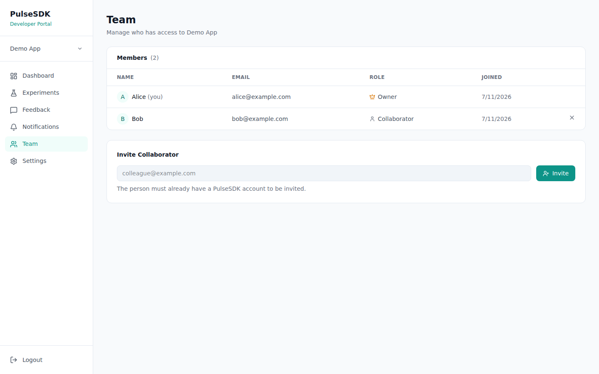
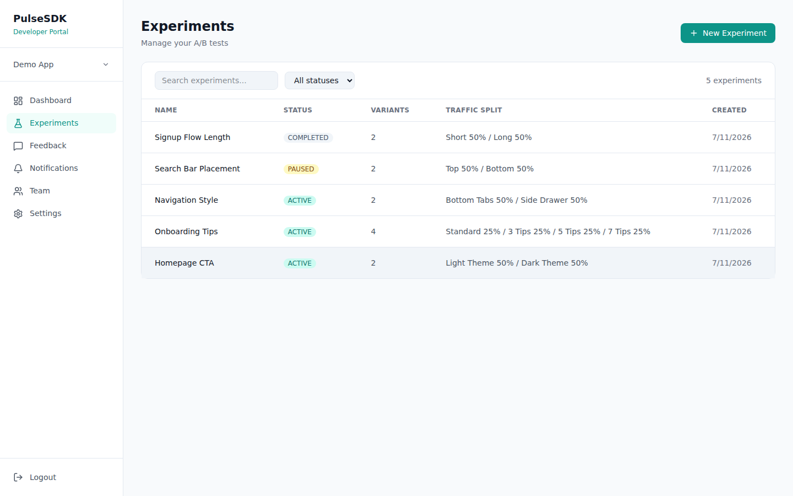
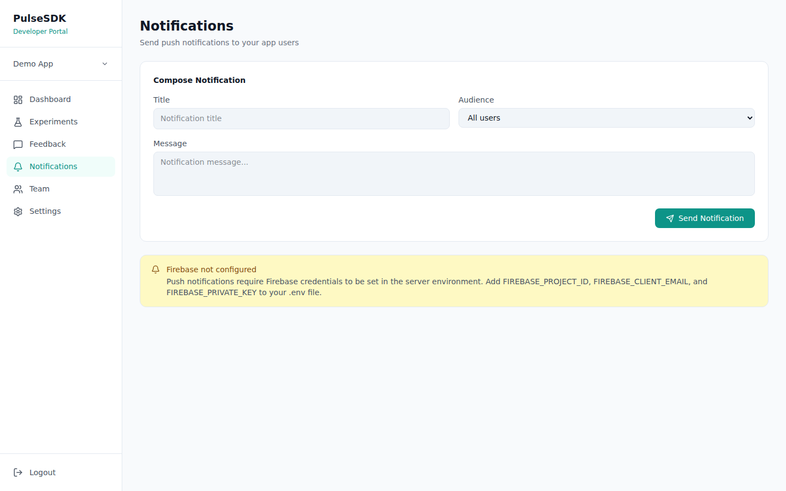

Usage
The core SDK workflow, and how to manage experiments from the Portal.
Identify your user
Call this once you know who the user is (e.g. after login) so their variant assignment and feedback are tied to a stable identity instead of just the device:
PulseSDK.identify(externalUserId = "user_123")
// on logout
PulseSDK.clearUser()Without identify(), the SDK still works — it registers an
anonymous device-scoped user automatically on init().
Read a variant
val variant = PulseSDK.getVariant("Homepage CTA") ?: return
when (variant.variantName) {
"Light Theme" -> applyLightTheme()
"Dark Theme" -> applyDarkTheme()
}
// arbitrary per-variant config, set from the Portal, read here without a redeploy
val itemLimit = variant.metadata?.get("itemLimit")?.toIntOrNull() ?: 10Assignment is deterministic per (user, experiment) — the
same user always gets the same variant, cached locally after the first
lookup. Returns null if the experiment doesn't exist, isn't
ACTIVE, or the experiment has a minimum app version the
device doesn't meet (see Targeting by app version
below). Every call to getVariant/getActiveVariants
also logs an exposure — see Exposure logging.
Need every active experiment at once, instead of naming them one by one?
val variants = PulseSDK.getActiveVariants() // List<VariantResult>Targeting by app version
An experiment can optionally require devices to be on a minimum app
version (set from the Portal, see Editing an experiment).
This is enforced server-side — the SDK sends its own versionName
on every fetch, and a targeted experiment simply isn't included in the
response for devices that don't qualify, so getVariant just
returns null for it rather than the app needing to check a
version itself.
Exposure logging
The SDK automatically logs an exposure — "this user was shown this
variant" — the first time getVariant/getActiveVariants
resolves a variant in a given process. No extra call needed. This is what
lets the Portal show a response rate (responses ÷ times shown) instead of
just a raw response count with no denominator.
QA: preview a specific variant
PulseSDK.overrideVariant("Homepage CTA", variantId = "35ec81b3-...")
// ...preview it...
PulseSDK.clearVariantOverride("Homepage CTA")This is a local-only override for testing — it doesn't change the real assignment server-side, and shouldn't run in production code paths.
Rate limiting prompts
Any in-app prompt — not just experiment feedback — can share one cooldown mechanism instead of every screen hand-rolling its own SharedPreferences timestamp check:
PulseSDK.setCooldownDays(7) // optional, defaults to 7
if (PulseSDK.shouldPrompt(screenId = "home")) {
showFeedbackPrompt()
PulseSDK.markPrompted(screenId = "home")
}Crash capture
Once init() has run, PulseSDK chains onto whatever
uncaught-exception handler is already installed (the platform default, or
another crash reporter) and write-ahead-logs a report — message, stack
trace, app version — to the same kind of local queue feedback events use.
No call needed; it's automatic. The write happens synchronously on the
crashing thread, since a process about to die can't reliably wait on a
coroutine dispatcher. The report uploads via POST /crashes on
the next launch that has a network connection.
Submit feedback
All four feedback types take the variant ID you got from
getVariant(). Pass variantId = null to
submitText for feedback that isn't tied to any experiment.
PulseSDK.submitStarRating(variant.variantId, rating = 5, comment = "Love it!")
PulseSDK.submitThumbs(variant.variantId, positive = true)
PulseSDK.submitMultipleChoice(variant.variantId, index = 2)
PulseSDK.submitText("Would love a dark mode toggle", screenId = "settings")Feedback is written to a local queue immediately and uploaded in the
background as soon as there's a network connection — calling any
submit* function never blocks on the network.
Managing experiments in the Portal
Apps and collaborators
An app is the unit everything else belongs to — one API key, one set of experiments, one set of users. Invite teammates by email from Settings; they need an account (or can register one on the spot) to accept.

Team members on an app, with their role.
Experiments and results

Every experiment for the active app, with status, variant count, and traffic split.
Open any experiment to see live results — response counts, average star rating, thumbs breakdown, or multiple-choice distribution, per variant — and every individual feedback response underneath, filterable by variant.
Editing an experiment
An experiment's name, per-variant traffic split, choices, metadata, and
minimum app version (see Targeting by app version)
can be edited after creation — but only while its status is
PAUSED. Pause it, click Edit, make changes,
then set it back to ACTIVE (or leave it paused). This is
intentionally disallowed on a running experiment: users already assigned
a variant would otherwise see inconsistent config mid-experiment. Adding
or removing variants, and changing the feedback type, aren't supported
here — those require a new experiment.
Notifications

Sending a push notification to an app's users, straight from the Portal.